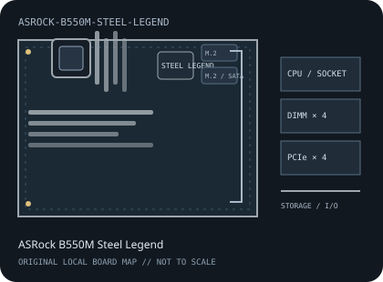

[ INDIVIDUAL COMPONENT // MOTHERBOARDS ]
ASRock B550M Steel Legend
AMD Socket AM4 / AMD B550, Micro-ATX, 244 × 244 mm, 2020. This record identifies the exact model and revision scope below.

REVISION WARNING: Verify the full model name and PCB revision silkscreen before fitting a CPU, selecting memory, or applying firmware. Similar names and revisions may use different support files.
Specifications
| Catalog subcategory | AMD Socket platforms |
|---|---|
| Board / revision covered | B550M Steel Legend retail model; confirm the PCB identity and any printed board revision before selecting BIOS or support files. |
| Socket and chipset | AMD Socket AM4 / AMD B550 |
| Form factor | Micro-ATX, 244 × 244 mm |
| Memory | Four dual-channel DDR4 DIMM sockets, up to 128 GB; ECC UDIMM behavior and overclocked rates depend on processor, BIOS and ASRock QVL. |
| CPU and BIOS support | Ryzen 3000, selected 4000 G-Series and 5000-series processors listed for the B550M Steel Legend; verify exact CPU and minimum BIOS in ASRock's support list. |
| Expansion | One CPU-connected PCIe x16 slot (generation depends on CPU), one chipset PCIe x16-length slot operating at x4 and one PCIe x1 slot. |
| Storage | Two M.2 sockets (one Hyper M.2 PCIe x4 path and one PCIe x2/SATA-capable path as specified) and six SATA 6 Gb/s ports; consult sharing notes. |
| Rear I/O and connectivity | Rear HDMI and DisplayPort for supported APU output, USB Type-C and Type-A including USB 3.2 Gen 2, 2.5GbE LAN and multi-channel audio. Wi-Fi is not included; an M.2 Key E slot permits an optional module. |
Compatibility and revision notes
This is the micro-ATX B550M model, not the full-size B550 Steel Legend. Check processor BIOS, M.2/SATA sharing, and whether optional Wi-Fi hardware is installed.
Socket, connector shape and chipset branding alone do not establish compatibility. Check the exact board revision, CPU support table, minimum BIOS, memory population rules, power connectors, case clearance and lane-sharing details in the cited documents.
Preservation and repair
Inspect AM4 socket contacts, Key E antenna/module hardware, M.2 pads and Steel Slot retention; identify the board by its full printed model before servicing.
For archival preservation, record PCB revision, serial/date codes, installed firmware, known faults, repairs and test conditions. Use ESD-safe handling and do not power a board with loose conductive hardware beneath it.
Manufacturer sources
- ASRock B550M Steel Legend specificationsOfficial specification page for the micro-ATX model.
- ASRock B550M Steel Legend user manual (PDF)Manufacturer manual for board layout, connectors and installation.
- ASRock B550M Steel Legend support and BIOSCheck model-specific CPU support and minimum BIOS.
Manufacturer specifications, manuals and support lists are authoritative for the physical board; use only revision-matched firmware.